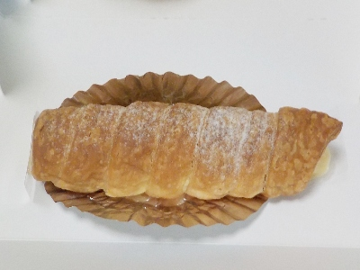

島根県出雲市渡橋町1212
更新日 : 2026/05/10

サクサクしたパイ生地にクリームが入ったコルネです。
とってもシンプルで想像できる味なんですが、それが一番美味しいんだなと思いました。
私はシュークリームが好きなんですが、これも好きです。
【おいしいものを食べよう。】【たくさん寝よう。】
【ソロ活をしよう!】【季節感のあることをしよう。】【動画視聴はほどほどに。】【当サイトの全てのコンテンツは無断転載禁止です。】